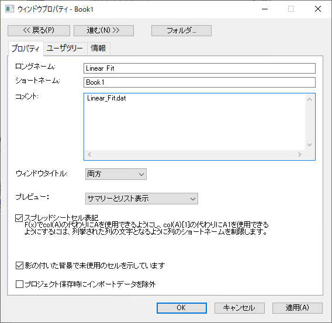

Originのウィンドウの命名規則
ChildWindow-Names
このトピックでは、ショートネーム(短い名前)とロングネーム(長い名前)のコンセプトについて紹介します。 Originのウィンドウにはウィンドウを識別するための固有の名前があります。 ウィンドウの名前はユーザにウィンドウの内容を識別するだけのものではありません。 ウィンドウ名は、Origin自体も使用しており、操作するデータを識別する手段として、ユーザインターフェース、コマンドウィンドウのコマンドライン、Origin CプログラムやLabTalkスクリプトなどのあらゆる場所で使用しています。
Originウィンドウのショートネーム(短い名前)
ワークブックのショートネームについての規則は:
- (プロジェクトの中で)固有の名前でなければならない
- スペースを含めることはできない
- 文字(A-Z, a-z)で始まらなければならない
- 文字と数字に制限 ( !,@,#,$,%,^, などは不可)
- 最大13文字まで
| ウィンドウの種類
|
デフォルトのショートネーム
|
|
ワークブック
|
BookN
|
|
行列
|
MBookN
|
|
グラフ
|
GraphN
|
|
関数グラフ
|
FunctionN
|
|
レイアウト
|
LayoutN
|
Originウィンドウのロングネーム(長い名前)
ウィンドウのロングネームについての規則は:
- 固有である必要はない
- スペースを含めることができる
- 文字、数値、特殊文字を先頭にすることができます。文字、数値、特殊文字で始めることができる!,#のような特殊文字をロングネームとして持つウィンドウをLabTalkで参照する場合には、これら特殊文字の使用は禁止されています。
- 長さに制限はない
デフォルトのロングネームはありません。
Originウィンドウに名前を付ける(名前を変更する)、ラベルを付ける
- Originワークブック、行列、グラフ、関数グラフ、レイアウト、ノートの各ウィンドウに名前を付けるには、ウィンドウをアクティブにして、「ウィンドウ：プロパティを選択します。
- または、
- ウィンドウのタイトルバーを右クリックして、ショートカットメニューからプロパティを選択します。
- 「ウィンドウのプロパティ」ダイアログボックスで、ロングネーム、ショートネーム、コメントを入力します。
- 
- コメントフィールドに複数行入力するには、各行末で、ENTERキーを押します。
- ウィンドウタイトルバーに表示したい名前を指定します。
Originのデフォルトの動作は、ウィンドウタイトルバーにロングネームを表示する設定にしているかどうかに関係なく、ショートネームはロングネームから作られます。
データセットの命名規則およびウィンドウの名前の付け方の動作についての詳細は、次のトピックをご覧下さい。
Originがウィンドウのロングネームとショートネームをどのように使用しているか
- 操作を実行する場合、ウィンドウのタイトルバーの表示が、ショートネーム、ロングネーム、または両方のいずれになっていたとしても、Originはショートネームを使用します。
- (環境設定：オプションの)その他のオプションタブで、ページのショートネームの自動更新の際、ロングネームに従う が 選択されていて、新規の子ウィンドウを開いて名前をロングネームにしているときは、ショートネームがロングネームをトラックします。必要に応じて、スペースや特殊文字を削除し、13文字まで切りつめますこの自動名称トラッキングは初期設定では無効になっています。この自動名称トラッキングは初期設定では無効になっています。
- また、オプションダイアログ(環境設定：オプション)のその他のオプションタブに、ロングネームが利用可能な時はそれを使うのチェックボックスがあります。このチェックボックスを選択すると、Originは、データセットが現れるユーザインターフェースのさまざまな場所でロングネームを使います。 (「」メニュー、「」メニュー、「作図の詳細」ダイアログボックスなど)
バージョン7.5以前のOriginでプロジェクトファイルを開く場合
古いバージョンのOPJファイルをOrigin8以降で開く場合
- Origin 7.5以前のバージョンで作成したワークシートと行列は、Origin8以降では、1ページのワークブックまたは行列ウィンドウとして開きます。
- ワークブックと行列ブックは、Origin 7.5以前のバージョンでは存在しませんでした。そのためデフォルトでOrigin8以降ではシートに名前が無い状態になります。
| 古いバージョン(Origin 7.5以前)
|
Origin 8以降
|
|
ワークシート/行列/グラフの名前
|
ショートネーム
|
|
ワークシート/行列/グラフのラベル、一行目
|
ロングネーム
|
|
ワークシート/行列/グラフのラベル、二行目など
|
コメント
|
|
--
|
ワークブック/行列のシートの名前
|
|
ワークシート列の名前
|
ワークシート列のショートネーム
|
|
ワークシート列のラベル、一行目
|
ワークシート列のロングネーム
|
|
ワークシート列のラベル、二行目
|
ワークシート列の単位
|
|
ワークシート列のラベル、三行目など
|
ワークシート列のコメント
|
Excelワークブックウィンドウの名前
Origin内でのExcelワークブックウィンドウの命名規則については、「Excel ワークブックウィンドウを管理する」をご覧下さい。